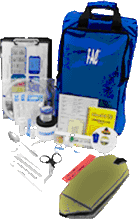

Equipment
| Department of Defense Biological Sampling Kit |
|---|
| The DoD biological sampling kit holds up to 8 Hand Held Assays (HHAs), used to test suspected surfaces for the presence of biological agents regardless of how the agent was released. The kit employs an antigen-antibody technology for the presence or absence of agents of interest. The assays are designed to collect samples from nonporous surfaces and are not designed for soil, skin, wood, food, or water sampling. |
| Dry Filter Unit (DFU) |
| The DFU Sampling Collector is used to collect and capture bio-particulates from ambient air. This is essentially a large air sampling device. |
| Equipment for Collecting Water and/or Liquid Samples |
Water and liquid sampling equipment includes the following:
|
| HazMat ID System |
| When used for biological health threat identification, the HazMat ID System provides qualitative results and is used to detect the presence of proteinaceous material. This piece of equipment is extremely useful for situations involving unknown powders because it uses infrared radiation to analyze the chemical bonds in the unknown compound, and it can provide specific identification. |
| Joint Biological Agent Identification and Diagnostic System (JBAIDS) |
 JBAIDS is used to provide rapid biological testing as part of both healthcare and the force protection structure of an installation. The system employs a polymerase chain reaction technology to determine the presence or absence of agents of interest. This equipment is used by medical laboratory personnel and it is often found with the deployable Biological Assessment Team. JBAIDS is used to provide rapid biological testing as part of both healthcare and the force protection structure of an installation. The system employs a polymerase chain reaction technology to determine the presence or absence of agents of interest. This equipment is used by medical laboratory personnel and it is often found with the deployable Biological Assessment Team. |
| M1M Analyzer |
| The M1M analyzer is also used by medical laboratory personnel and uses an electrochemiluminescence (ECL) technology to identify presence or absence of biological agents of interest. Compared to the HHA, the M1M has better sensitivity. |
| QuickSilver Kit |
| The QuickSilver Kit is used for collecting environmental and forensic evidence samples for later laboratory analysis. |
| Radiation Detection Company (RADeCO) Kit |
| The RADeCO kit is used for sampling airborne particulates or a combination or particulates and radionuclides. |
| XMX Bio-aerosol Sampler |
| The XMX bio-aerosol sampler is used for rapid collection of any aerosol. It operates at a flow rate of 800 L/min. This is essentially a large air sampling device. |